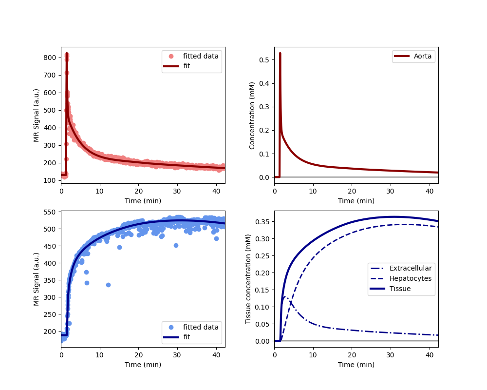

Note
Go to the end to download the full example code
The TRISTAN experimental medicine study (1 scan protocol)#
This example illustrates the use of AortaLiver for joint fitting of aorta and liver signals to a whole-body model. The use case is provided by the liver work package of the TRISTAN project which develops imaging biomarkers for drug safety assessment. The data and analysis was first presented at the ISMRM in 2024 (Min et al 2024, manuscript in press).
The data were acquired in the aorta and liver of 10 healthy volunteers with dynamic gadoxetate-enhanced MRI, before and after administration of a drug (rifampicin) which is known to inhibit liver function. The assessments were done on two separate visits at least 2 weeks apart.
The research question was to what extent rifampicin inhibits gadoxetate uptake rate from the extracellular space into the liver hepatocytes (khe, mL/min/100mL) and excretion rate from hepatocytes to bile (kbh, mL/100mL/min).
2 of the volunteers only had the baseline assessment, the other 8 volunteers completed the full study. The results showed consistent and strong inhibition of khe (95%) and kbh (40%) by rifampicin. This implies that rifampicin poses a risk of drug-drug interactions (DDI), meaning it can cause another drug to circulate in the body for far longer than expected, potentially causing harm or raising a need for dose adjustment.
Note: this example is different to the 2 scan example of the same study in that this uses only the first scan to fit the model.
Reference#
Thazin Min, Marta Tibiletti, Paul Hockings, Aleksandra Galetin, Ebony Gunwhy, Gerry Kenna, Nicola Melillo, Geoff JM Parker, Gunnar Schuetz, Daniel Scotcher, John Waterton, Ian Rowe, and Steven Sourbron. Measurement of liver function with dynamic gadoxetate-enhanced MRI: a validation study in healthy volunteers. Proc Intl Soc Mag Reson Med, Singapore 2024.
Import necessary packages
import pandas as pd
import numpy as np
import matplotlib.pyplot as plt
import dcmri as dc
Fetch the 1-scan data from the TRISTAN experimental medicine study:
data = dc.fetch('tristan1scan')
Before running the full analysis on all cases, lets illustrate the results by fitting the baseline visit for the first subject. We use maximum verbosity to get some feedback about the iterations:
Iteration Total nfev Cost Cost reduction Step norm Optimality
0 1 2.3624e+07 1.06e+08
1 2 4.5609e+06 1.91e+07 5.19e+01 1.69e+07
2 3 9.6268e+05 3.60e+06 5.33e+01 1.39e+07
3 4 2.7913e+05 6.84e+05 5.99e+01 5.86e+06
4 5 8.6705e+04 1.92e+05 1.15e+02 1.57e+06
5 6 5.4097e+04 3.26e+04 6.88e+01 8.26e+04
6 7 4.8565e+04 5.53e+03 9.43e+01 7.61e+04
7 8 4.7682e+04 8.83e+02 7.32e+01 3.16e+05
8 9 4.6951e+04 7.31e+02 2.91e+01 2.03e+05
9 10 4.6852e+04 9.96e+01 2.69e+01 3.43e+05
10 11 4.6150e+04 7.02e+02 5.07e+00 6.85e+04
11 12 4.5663e+04 4.87e+02 3.20e+00 5.14e+03
12 13 4.5630e+04 3.25e+01 1.60e+00 2.01e+04
13 15 4.5630e+04 0.00e+00 0.00e+00 2.01e+04
`xtol` termination condition is satisfied.
Function evaluations 15, initial cost 2.3624e+07, final cost 4.5630e+04, first-order optimality 2.01e+04.
Iteration Total nfev Cost Cost reduction Step norm Optimality
0 1 8.4819e+06 5.93e+08
1 2 1.1968e+05 8.36e+06 6.64e+02 3.69e+07
2 3 6.8908e+04 5.08e+04 7.59e+01 9.83e+05
3 4 6.4426e+04 4.48e+03 9.77e+01 6.75e+05
4 5 6.3209e+04 1.22e+03 6.92e+01 2.83e+05
5 6 6.2985e+04 2.24e+02 2.95e+01 5.62e+04
6 7 6.2984e+04 1.25e+00 3.07e+00 1.23e+03
7 8 6.2984e+04 1.73e-02 1.05e-01 4.24e+00
`xtol` termination condition is satisfied.
Function evaluations 8, initial cost 8.4819e+06, final cost 6.2984e+04, first-order optimality 4.24e+00.
Iteration Total nfev Cost Cost reduction Step norm Optimality
0 1 1.0861e+05 3.69e+04
1 3 1.0856e+05 5.02e+01 1.62e+01 2.58e+04
2 4 1.0856e+05 0.00e+00 0.00e+00 2.58e+04
`xtol` termination condition is satisfied.
Function evaluations 4, initial cost 1.0861e+05, final cost 1.0856e+05, first-order optimality 2.58e+04.
<dcmri.mods_aorta.AortaLiver object at 0x000002205906F790>
Plot the results to check that the model has fitted the data. The plot also shows the concentration in the two liver compartments separately:
Print the measured model parameters and any derived parameters. Standard deviations are included as a measure of parameter uncertainty, indicate that all parameters are identified robustly:
model.print_params(round_to=3)
-----------------------------------------
Free parameters with their errors (stdev)
-----------------------------------------
Bolus arrival time (BAT): 77.535 (0.544) sec
Cardiac output (CO): 259.285 (7.428) mL/sec
Heart-lung mean transit time (Thl): 15.957 (1.022) sec
Heart-lung transit time dispersion (Dhl): 0.692 (0.015)
Organs mean transit time (To): 25.18 (0.674) sec
Extraction fraction (Eb): 0.038 (0.003)
Liver extracellular mean transit time (Tel): 60.0 (2.805) sec
Liver extracellular dispersion (De): 0.843 (0.015)
Liver extracellular volume fraction (ve): 0.461 (0.014) mL/mL
Hepatocellular uptake rate (khe): 0.005 (0.0) mL/sec/mL
Hepatocellular transit time (Th): 2581.954 (47.826) sec
Organs extraction fraction (Eo): 0.117 (0.002)
Organs extracellular mean transit time (Teb): 674.931 (22.843) sec
------------------
Derived parameters
------------------
Blood precontrast T1 (T10b): 1.708 sec
Mean circulation time (Tc): 41.137 sec
Liver precontrast T1 (T10l): 0.762 sec
Biliary excretion rate (kbh): 0.0 mL/sec/mL
Hepatocellular tissue uptake rate (Khe): 0.011 mL/sec/mL
Biliary tissue excretion rate (Kbh): 0.0 mL/sec/mL
Liver blood clearance (CL): 5.696 mL/sec
Now that we have illustrated an individual result in some detail, we proceed with fitting the data for all 10 volunteers, at baseline and rifampicin visit. We do not print output for these individual computations and instead store results in one single dataframe:
results = []
for visit in data:
for subj in data[visit]:
# Get the data for the subject and visit
data_subj = data[visit][subj]
# Use ``dcmri`` to fit the model and export the parameters:
model = dc.AortaLiver(**data_subj['params'])
model.train(data_subj['xdata'], data_subj['ydata'], xtol=1e-3)
pars_subj = model.export_params()
# Convert the parameter dictionary to a dataframe
pars_subj = pd.DataFrame.from_dict(pars_subj,
orient = 'index', columns = ["name", "value", "unit", 'stdev'])
pars_subj['subject'] = subj
pars_subj['visit'] = visit
pars_subj['parameter'] = pars_subj.index
# Add the dataframe to the list of results
results.append(pars_subj)
# Combine all results into a single dataframe.
results = pd.concat(results).reset_index(drop=True)
# Print all results
print(results.to_string())
name value unit stdev subject visit parameter
0 Blood precontrast T1 1.708230 sec 0.000000 001 baseline T10b
1 Bolus arrival time 77.534890 sec 0.544424 001 baseline BAT
2 Cardiac output 259.284607 mL/sec 7.428393 001 baseline CO
3 Heart-lung mean transit time 15.956943 sec 1.021984 001 baseline Thl
4 Heart-lung transit time dispersion 0.691637 0.015406 001 baseline Dhl
5 Organs mean transit time 25.180436 sec 0.674034 001 baseline To
6 Extraction fraction 0.037892 0.002817 001 baseline Eb
7 Mean circulation time 41.137380 sec 0.000000 001 baseline Tc
8 Organs extraction fraction 0.116538 0.001991 001 baseline Eo
9 Organs extracellular mean transit time 674.931206 sec 22.842774 001 baseline Teb
10 Liver precontrast T1 0.762050 sec 0.000000 001 baseline T10l
11 Liver extracellular mean transit time 60.000000 sec 2.805262 001 baseline Tel
12 Liver extracellular dispersion 0.843069 0.014704 001 baseline De
13 Liver extracellular volume fraction 0.461277 mL/mL 0.014493 001 baseline ve
14 Hepatocellular uptake rate 0.005149 mL/sec/mL 0.000045 001 baseline khe
15 Hepatocellular transit time 2581.953770 sec 47.826089 001 baseline Th
16 Biliary excretion rate 0.000209 mL/sec/mL 0.000000 001 baseline kbh
17 Hepatocellular tissue uptake rate 0.011163 mL/sec/mL 0.000000 001 baseline Khe
18 Biliary tissue excretion rate 0.000387 mL/sec/mL 0.000000 001 baseline Kbh
19 Liver blood clearance 5.696062 mL/sec 0.000000 001 baseline CL
20 Blood precontrast T1 1.699910 sec 0.000000 002 baseline T10b
21 Bolus arrival time 79.126604 sec 2.970199 002 baseline BAT
22 Cardiac output 79.353592 mL/sec 4.828960 002 baseline CO
23 Heart-lung mean transit time 16.936242 sec 3.553735 002 baseline Thl
24 Heart-lung transit time dispersion 0.511848 0.070330 002 baseline Dhl
25 Organs mean transit time 26.740286 sec 2.864066 002 baseline To
26 Extraction fraction 0.015718 0.007445 002 baseline Eb
27 Mean circulation time 43.676529 sec 0.000000 002 baseline Tc
28 Organs extraction fraction 0.321741 0.022789 002 baseline Eo
29 Organs extracellular mean transit time 356.041155 sec 37.983581 002 baseline Teb
30 Liver precontrast T1 0.756170 sec 0.000000 002 baseline T10l
31 Liver extracellular mean transit time 59.999950 sec 201.033184 002 baseline Tel
32 Liver extracellular dispersion 0.827286 0.556710 002 baseline De
33 Liver extracellular volume fraction 0.176132 mL/mL 0.751219 002 baseline ve
34 Hepatocellular uptake rate 0.006758 mL/sec/mL 0.000840 002 baseline khe
35 Hepatocellular transit time 1496.388589 sec 83.219411 002 baseline Th
36 Biliary excretion rate 0.000551 mL/sec/mL 0.000000 002 baseline kbh
37 Hepatocellular tissue uptake rate 0.038366 mL/sec/mL 0.000000 002 baseline Khe
38 Biliary tissue excretion rate 0.000668 mL/sec/mL 0.000000 002 baseline Kbh
39 Liver blood clearance 4.619995 mL/sec 0.000000 002 baseline CL
40 Blood precontrast T1 1.668320 sec 0.000000 003 baseline T10b
41 Bolus arrival time 67.937539 sec 1.221366 003 baseline BAT
42 Cardiac output 94.672863 mL/sec 2.167396 003 baseline CO
43 Heart-lung mean transit time 18.356387 sec 1.421020 003 baseline Thl
44 Heart-lung transit time dispersion 0.405462 0.022090 003 baseline Dhl
45 Organs mean transit time 27.051695 sec 1.807961 003 baseline To
46 Extraction fraction 0.097462 0.004449 003 baseline Eb
47 Mean circulation time 45.408081 sec 0.000000 003 baseline Tc
48 Organs extraction fraction 0.153289 0.009124 003 baseline Eo
49 Organs extracellular mean transit time 338.487822 sec 25.562705 003 baseline Teb
50 Liver precontrast T1 0.706900 sec 0.000000 003 baseline T10l
51 Liver extracellular mean transit time 28.696542 sec 19.359098 003 baseline Tel
52 Liver extracellular dispersion 0.702762 0.234680 003 baseline De
53 Liver extracellular volume fraction 0.134777 mL/mL 0.100985 003 baseline ve
54 Hepatocellular uptake rate 0.008495 mL/sec/mL 0.000174 003 baseline khe
55 Hepatocellular transit time 2712.081620 sec 120.194515 003 baseline Th
56 Biliary excretion rate 0.000319 mL/sec/mL 0.000000 003 baseline kbh
57 Hepatocellular tissue uptake rate 0.063032 mL/sec/mL 0.000000 003 baseline Khe
58 Biliary tissue excretion rate 0.000369 mL/sec/mL 0.000000 003 baseline Kbh
59 Liver blood clearance 7.425493 mL/sec 0.000000 003 baseline CL
60 Blood precontrast T1 1.836620 sec 0.000000 004 baseline T10b
61 Bolus arrival time 67.736470 sec 0.307441 004 baseline BAT
62 Cardiac output 61.097491 mL/sec 0.837809 004 baseline CO
63 Heart-lung mean transit time 16.809471 sec 0.347673 004 baseline Thl
64 Heart-lung transit time dispersion 0.337605 0.009125 004 baseline Dhl
65 Organs mean transit time 32.513338 sec 1.456529 004 baseline To
66 Extraction fraction 0.150000 0.011713 004 baseline Eb
67 Mean circulation time 49.322809 sec 0.000000 004 baseline Tc
68 Organs extraction fraction 0.337425 0.010225 004 baseline Eo
69 Organs extracellular mean transit time 625.586951 sec 50.967811 004 baseline Teb
70 Liver precontrast T1 0.802360 sec 0.000000 004 baseline T10l
71 Liver extracellular mean transit time 59.999983 sec 48.849135 004 baseline Tel
72 Liver extracellular dispersion 0.872855 0.096590 004 baseline De
73 Liver extracellular volume fraction 0.083927 mL/mL 0.088793 004 baseline ve
74 Hepatocellular uptake rate 0.003502 mL/sec/mL 0.000057 004 baseline khe
75 Hepatocellular transit time 18555.367989 sec 4562.480248 004 baseline Th
76 Biliary excretion rate 0.000049 mL/sec/mL 0.000000 004 baseline kbh
77 Hepatocellular tissue uptake rate 0.041723 mL/sec/mL 0.000000 004 baseline Khe
78 Biliary tissue excretion rate 0.000054 mL/sec/mL 0.000000 004 baseline Kbh
79 Liver blood clearance 3.102667 mL/sec 0.000000 004 baseline CL
80 Blood precontrast T1 1.281560 sec 0.000000 005 baseline T10b
81 Bolus arrival time 80.658289 sec 1.289949 005 baseline BAT
82 Cardiac output 122.234037 mL/sec 5.304753 005 baseline CO
83 Heart-lung mean transit time 8.340999 sec 1.575828 005 baseline Thl
84 Heart-lung transit time dispersion 0.806840 0.117406 005 baseline Dhl
85 Organs mean transit time 26.954133 sec 1.243911 005 baseline To
86 Extraction fraction 0.052089 0.004418 005 baseline Eb
87 Mean circulation time 35.295133 sec 0.000000 005 baseline Tc
88 Organs extraction fraction 0.161329 0.007563 005 baseline Eo
89 Organs extracellular mean transit time 373.761632 sec 21.300696 005 baseline Teb
90 Liver precontrast T1 0.802500 sec 0.000000 005 baseline T10l
91 Liver extracellular mean transit time 44.133462 sec 6.985797 005 baseline Tel
92 Liver extracellular dispersion 0.788367 0.045488 005 baseline De
93 Liver extracellular volume fraction 0.250114 mL/mL 0.033840 005 baseline ve
94 Hepatocellular uptake rate 0.006295 mL/sec/mL 0.000113 005 baseline khe
95 Hepatocellular transit time 1707.403943 sec 46.892688 005 baseline Th
96 Biliary excretion rate 0.000439 mL/sec/mL 0.000000 005 baseline kbh
97 Hepatocellular tissue uptake rate 0.025170 mL/sec/mL 0.000000 005 baseline Khe
98 Biliary tissue excretion rate 0.000586 mL/sec/mL 0.000000 005 baseline Kbh
99 Liver blood clearance 4.440335 mL/sec 0.000000 005 baseline CL
100 Blood precontrast T1 1.765040 sec 0.000000 006 baseline T10b
101 Bolus arrival time 70.920087 sec 0.186440 006 baseline BAT
102 Cardiac output 81.343912 mL/sec 1.391210 006 baseline CO
103 Heart-lung mean transit time 16.107824 sec 0.236439 006 baseline Thl
104 Heart-lung transit time dispersion 0.332610 0.008020 006 baseline Dhl
105 Organs mean transit time 36.758165 sec 1.944244 006 baseline To
106 Extraction fraction 0.057515 0.004508 006 baseline Eb
107 Mean circulation time 52.865989 sec 0.000000 006 baseline Tc
108 Organs extraction fraction 0.203339 0.009025 006 baseline Eo
109 Organs extracellular mean transit time 494.152075 sec 39.605450 006 baseline Teb
110 Liver precontrast T1 0.839760 sec 0.000000 006 baseline T10l
111 Liver extracellular mean transit time 59.387356 sec 17.961351 006 baseline Tel
112 Liver extracellular dispersion 0.753156 0.082021 006 baseline De
113 Liver extracellular volume fraction 0.282332 mL/mL 0.090646 006 baseline ve
114 Hepatocellular uptake rate 0.007429 mL/sec/mL 0.000200 006 baseline khe
115 Hepatocellular transit time 2303.634925 sec 114.349707 006 baseline Th
116 Biliary excretion rate 0.000312 mL/sec/mL 0.000000 006 baseline kbh
117 Hepatocellular tissue uptake rate 0.026313 mL/sec/mL 0.000000 006 baseline Khe
118 Biliary tissue excretion rate 0.000434 mL/sec/mL 0.000000 006 baseline Kbh
119 Liver blood clearance 5.134545 mL/sec 0.000000 006 baseline CL
120 Blood precontrast T1 1.779980 sec 0.000000 007 baseline T10b
121 Bolus arrival time 72.566849 sec 0.172385 007 baseline BAT
122 Cardiac output 123.912876 mL/sec 2.714704 007 baseline CO
123 Heart-lung mean transit time 8.805816 sec 0.252727 007 baseline Thl
124 Heart-lung transit time dispersion 0.335970 0.011295 007 baseline Dhl
125 Organs mean transit time 20.422974 sec 1.066576 007 baseline To
126 Extraction fraction 0.036345 0.002570 007 baseline Eb
127 Mean circulation time 29.228791 sec 0.000000 007 baseline Tc
128 Organs extraction fraction 0.221762 0.008051 007 baseline Eo
129 Organs extracellular mean transit time 400.744399 sec 18.382695 007 baseline Teb
130 Liver precontrast T1 0.855420 sec 0.000000 007 baseline T10l
131 Liver extracellular mean transit time 59.996072 sec 15.334159 007 baseline Tel
132 Liver extracellular dispersion 1.000000 0.082890 007 baseline De
133 Liver extracellular volume fraction 0.062465 mL/mL 0.040412 007 baseline ve
134 Hepatocellular uptake rate 0.005786 mL/sec/mL 0.000118 007 baseline khe
135 Hepatocellular transit time 1834.388317 sec 70.663691 007 baseline Th
136 Biliary excretion rate 0.000511 mL/sec/mL 0.000000 007 baseline kbh
137 Hepatocellular tissue uptake rate 0.092620 mL/sec/mL 0.000000 007 baseline Khe
138 Biliary tissue excretion rate 0.000545 mL/sec/mL 0.000000 007 baseline Kbh
139 Liver blood clearance 5.462531 mL/sec 0.000000 007 baseline CL
140 Blood precontrast T1 1.788430 sec 0.000000 008 baseline T10b
141 Bolus arrival time 84.623758 sec 8.209392 008 baseline BAT
142 Cardiac output 207.600831 mL/sec 61.226999 008 baseline CO
143 Heart-lung mean transit time 6.098073 sec 9.460651 008 baseline Thl
144 Heart-lung transit time dispersion 0.949281 1.253347 008 baseline Dhl
145 Organs mean transit time 27.850659 sec 1.541302 008 baseline To
146 Extraction fraction 0.034653 0.022798 008 baseline Eb
147 Mean circulation time 33.948732 sec 0.000000 008 baseline Tc
148 Organs extraction fraction 0.132664 0.032334 008 baseline Eo
149 Organs extracellular mean transit time 431.331961 sec 120.028052 008 baseline Teb
150 Liver precontrast T1 0.743980 sec 0.000000 008 baseline T10l
151 Liver extracellular mean transit time 23.166997 sec 3.316794 008 baseline Tel
152 Liver extracellular dispersion 0.561217 0.085938 008 baseline De
153 Liver extracellular volume fraction 0.182177 mL/mL 0.021185 008 baseline ve
154 Hepatocellular uptake rate 0.006616 mL/sec/mL 0.000125 008 baseline khe
155 Hepatocellular transit time 1632.056396 sec 49.269719 008 baseline Th
156 Biliary excretion rate 0.000501 mL/sec/mL 0.000000 008 baseline kbh
157 Hepatocellular tissue uptake rate 0.036319 mL/sec/mL 0.000000 008 baseline Khe
158 Biliary tissue excretion rate 0.000613 mL/sec/mL 0.000000 008 baseline Kbh
159 Liver blood clearance 6.810351 mL/sec 0.000000 008 baseline CL
160 Blood precontrast T1 1.798810 sec 0.000000 009 baseline T10b
161 Bolus arrival time 75.091066 sec 0.379131 009 baseline BAT
162 Cardiac output 185.576328 mL/sec 3.507688 009 baseline CO
163 Heart-lung mean transit time 14.736712 sec 0.590966 009 baseline Thl
164 Heart-lung transit time dispersion 0.537060 0.010795 009 baseline Dhl
165 Organs mean transit time 33.327861 sec 1.154247 009 baseline To
166 Extraction fraction 0.055556 0.002545 009 baseline Eb
167 Mean circulation time 48.064574 sec 0.000000 009 baseline Tc
168 Organs extraction fraction 0.117285 0.003784 009 baseline Eo
169 Organs extracellular mean transit time 632.264330 sec 39.507264 009 baseline Teb
170 Liver precontrast T1 0.847050 sec 0.000000 009 baseline T10l
171 Liver extracellular mean transit time 29.406857 sec 4.958922 009 baseline Tel
172 Liver extracellular dispersion 0.688874 0.077614 009 baseline De
173 Liver extracellular volume fraction 0.135069 mL/mL 0.015919 009 baseline ve
174 Hepatocellular uptake rate 0.003478 mL/sec/mL 0.000057 009 baseline khe
175 Hepatocellular transit time 2050.291164 sec 56.998034 009 baseline Th
176 Biliary excretion rate 0.000422 mL/sec/mL 0.000000 009 baseline kbh
177 Hepatocellular tissue uptake rate 0.025749 mL/sec/mL 0.000000 009 baseline Khe
178 Biliary tissue excretion rate 0.000488 mL/sec/mL 0.000000 009 baseline Kbh
179 Liver blood clearance 4.125203 mL/sec 0.000000 009 baseline CL
180 Blood precontrast T1 1.590270 sec 0.000000 010 baseline T10b
181 Bolus arrival time 68.452522 sec 0.187370 010 baseline BAT
182 Cardiac output 99.342532 mL/sec 1.219078 010 baseline CO
183 Heart-lung mean transit time 20.362667 sec 0.223104 010 baseline Thl
184 Heart-lung transit time dispersion 0.301656 0.005182 010 baseline Dhl
185 Organs mean transit time 37.366817 sec 1.271759 010 baseline To
186 Extraction fraction 0.037450 0.002939 010 baseline Eb
187 Mean circulation time 57.729483 sec 0.000000 010 baseline Tc
188 Organs extraction fraction 0.167177 0.004390 010 baseline Eo
189 Organs extracellular mean transit time 725.257462 sec 45.717871 010 baseline Teb
190 Liver precontrast T1 0.806320 sec 0.000000 010 baseline T10l
191 Liver extracellular mean transit time 59.995882 sec 43.054566 010 baseline Tel
192 Liver extracellular dispersion 0.882133 0.080912 010 baseline De
193 Liver extracellular volume fraction 0.090340 mL/mL 0.093311 010 baseline ve
194 Hepatocellular uptake rate 0.004158 mL/sec/mL 0.000084 010 baseline khe
195 Hepatocellular transit time 1993.944662 sec 58.562503 010 baseline Th
196 Biliary excretion rate 0.000456 mL/sec/mL 0.000000 010 baseline kbh
197 Hepatocellular tissue uptake rate 0.046027 mL/sec/mL 0.000000 010 baseline Khe
198 Biliary tissue excretion rate 0.000502 mL/sec/mL 0.000000 010 baseline Kbh
199 Liver blood clearance 4.473630 mL/sec 0.000000 010 baseline CL
200 Blood precontrast T1 1.560800 sec 0.000000 002 rifampicin T10b
201 Bolus arrival time 77.485497 sec 1.156500 002 rifampicin BAT
202 Cardiac output 89.048430 mL/sec 3.055212 002 rifampicin CO
203 Heart-lung mean transit time 11.885270 sec 1.385509 002 rifampicin Thl
204 Heart-lung transit time dispersion 0.540320 0.043055 002 rifampicin Dhl
205 Organs mean transit time 30.591714 sec 1.875602 002 rifampicin To
206 Extraction fraction 0.057948 0.004206 002 rifampicin Eb
207 Mean circulation time 42.476985 sec 0.000000 002 rifampicin Tc
208 Organs extraction fraction 0.150558 0.010631 002 rifampicin Eo
209 Organs extracellular mean transit time 356.812006 sec 40.597046 002 rifampicin Teb
210 Liver precontrast T1 0.814510 sec 0.000000 002 rifampicin T10l
211 Liver extracellular mean transit time 41.040702 sec 5.267863 002 rifampicin Tel
212 Liver extracellular dispersion 0.698971 0.059479 002 rifampicin De
213 Liver extracellular volume fraction 0.163979 mL/mL 0.012308 002 rifampicin ve
214 Hepatocellular uptake rate 0.000489 mL/sec/mL 0.000039 002 rifampicin khe
215 Hepatocellular transit time 35999.996174 sec 78542.266768 002 rifampicin Th
216 Biliary excretion rate 0.000023 mL/sec/mL 0.000000 002 rifampicin kbh
217 Hepatocellular tissue uptake rate 0.002981 mL/sec/mL 0.000000 002 rifampicin Khe
218 Biliary tissue excretion rate 0.000028 mL/sec/mL 0.000000 002 rifampicin Kbh
219 Liver blood clearance 0.392206 mL/sec 0.000000 002 rifampicin CL
220 Blood precontrast T1 1.710990 sec 0.000000 003 rifampicin T10b
221 Bolus arrival time 65.039138 sec 0.775655 003 rifampicin BAT
222 Cardiac output 99.674100 mL/sec 2.543775 003 rifampicin CO
223 Heart-lung mean transit time 15.229025 sec 0.846733 003 rifampicin Thl
224 Heart-lung transit time dispersion 0.355315 0.015321 003 rifampicin Dhl
225 Organs mean transit time 23.576983 sec 1.165537 003 rifampicin To
226 Extraction fraction 0.050410 0.002476 003 rifampicin Eb
227 Mean circulation time 38.806009 sec 0.000000 003 rifampicin Tc
228 Organs extraction fraction 0.123759 0.008748 003 rifampicin Eo
229 Organs extracellular mean transit time 299.703788 sec 28.520940 003 rifampicin Teb
230 Liver precontrast T1 0.725540 sec 0.000000 003 rifampicin T10l
231 Liver extracellular mean transit time 28.601202 sec 2.552964 003 rifampicin Tel
232 Liver extracellular dispersion 0.605043 0.049316 003 rifampicin De
233 Liver extracellular volume fraction 0.195388 mL/mL 0.009797 003 rifampicin ve
234 Hepatocellular uptake rate 0.000537 mL/sec/mL 0.000033 003 rifampicin khe
235 Hepatocellular transit time 17370.325791 sec 14678.819527 003 rifampicin Th
236 Biliary excretion rate 0.000046 mL/sec/mL 0.000000 003 rifampicin kbh
237 Hepatocellular tissue uptake rate 0.002750 mL/sec/mL 0.000000 003 rifampicin Khe
238 Biliary tissue excretion rate 0.000058 mL/sec/mL 0.000000 003 rifampicin Kbh
239 Liver blood clearance 0.463031 mL/sec 0.000000 003 rifampicin CL
240 Blood precontrast T1 1.787920 sec 0.000000 004 rifampicin T10b
241 Bolus arrival time 64.636087 sec 0.085439 004 rifampicin BAT
242 Cardiac output 96.538798 mL/sec 0.835376 004 rifampicin CO
243 Heart-lung mean transit time 18.430081 sec 0.153428 004 rifampicin Thl
244 Heart-lung transit time dispersion 0.379338 0.003552 004 rifampicin Dhl
245 Organs mean transit time 41.580459 sec 1.131001 004 rifampicin To
246 Extraction fraction 0.038210 0.002359 004 rifampicin Eb
247 Mean circulation time 60.010540 sec 0.000000 004 rifampicin Tc
248 Organs extraction fraction 0.232552 0.005055 004 rifampicin Eo
249 Organs extracellular mean transit time 426.591301 sec 21.257791 004 rifampicin Teb
250 Liver precontrast T1 0.802290 sec 0.000000 004 rifampicin T10l
251 Liver extracellular mean transit time 60.000000 sec 3.684590 004 rifampicin Tel
252 Liver extracellular dispersion 0.799186 0.020110 004 rifampicin De
253 Liver extracellular volume fraction 0.199753 mL/mL 0.006948 004 rifampicin ve
254 Hepatocellular uptake rate 0.000289 mL/sec/mL 0.000026 004 rifampicin khe
255 Hepatocellular transit time 6758.314635 sec 3418.463466 004 rifampicin Th
256 Biliary excretion rate 0.000118 mL/sec/mL 0.000000 004 rifampicin kbh
257 Hepatocellular tissue uptake rate 0.001448 mL/sec/mL 0.000000 004 rifampicin Khe
258 Biliary tissue excretion rate 0.000148 mL/sec/mL 0.000000 004 rifampicin Kbh
259 Liver blood clearance 0.284364 mL/sec 0.000000 004 rifampicin CL
260 Blood precontrast T1 1.781570 sec 0.000000 006 rifampicin T10b
261 Bolus arrival time 70.946507 sec 0.338030 006 rifampicin BAT
262 Cardiac output 144.483023 mL/sec 2.474018 006 rifampicin CO
263 Heart-lung mean transit time 15.486131 sec 0.366096 006 rifampicin Thl
264 Heart-lung transit time dispersion 0.298354 0.008447 006 rifampicin Dhl
265 Organs mean transit time 21.485735 sec 0.992720 006 rifampicin To
266 Extraction fraction 0.021583 0.002017 006 rifampicin Eb
267 Mean circulation time 36.971866 sec 0.000000 006 rifampicin Tc
268 Organs extraction fraction 0.128546 0.005705 006 rifampicin Eo
269 Organs extracellular mean transit time 406.016560 sec 33.990235 006 rifampicin Teb
270 Liver precontrast T1 0.836510 sec 0.000000 006 rifampicin T10l
271 Liver extracellular mean transit time 40.545491 sec 3.161143 006 rifampicin Tel
272 Liver extracellular dispersion 0.682176 0.033797 006 rifampicin De
273 Liver extracellular volume fraction 0.292555 mL/mL 0.012378 006 rifampicin ve
274 Hepatocellular uptake rate 0.000254 mL/sec/mL 0.000041 006 rifampicin khe
275 Hepatocellular transit time 35999.997430 sec 171726.228854 006 rifampicin Th
276 Biliary excretion rate 0.000020 mL/sec/mL 0.000000 006 rifampicin kbh
277 Hepatocellular tissue uptake rate 0.000870 mL/sec/mL 0.000000 006 rifampicin Khe
278 Biliary tissue excretion rate 0.000028 mL/sec/mL 0.000000 006 rifampicin Kbh
279 Liver blood clearance 0.179560 mL/sec 0.000000 006 rifampicin CL
280 Blood precontrast T1 1.703810 sec 0.000000 007 rifampicin T10b
281 Bolus arrival time 66.852803 sec 0.579749 007 rifampicin BAT
282 Cardiac output 110.380333 mL/sec 1.812577 007 rifampicin CO
283 Heart-lung mean transit time 13.067924 sec 0.665594 007 rifampicin Thl
284 Heart-lung transit time dispersion 0.361733 0.013820 007 rifampicin Dhl
285 Organs mean transit time 19.666900 sec 1.039997 007 rifampicin To
286 Extraction fraction 0.045397 0.001443 007 rifampicin Eb
287 Mean circulation time 32.734824 sec 0.000000 007 rifampicin Tc
288 Organs extraction fraction 0.207884 0.008802 007 rifampicin Eo
289 Organs extracellular mean transit time 227.178945 sec 12.490652 007 rifampicin Teb
290 Liver precontrast T1 0.840480 sec 0.000000 007 rifampicin T10l
291 Liver extracellular mean transit time 50.073803 sec 3.960838 007 rifampicin Tel
292 Liver extracellular dispersion 0.766050 0.030774 007 rifampicin De
293 Liver extracellular volume fraction 0.172655 mL/mL 0.007275 007 rifampicin ve
294 Hepatocellular uptake rate 0.000258 mL/sec/mL 0.000019 007 rifampicin khe
295 Hepatocellular transit time 35999.999190 sec 64442.325297 007 rifampicin Th
296 Biliary excretion rate 0.000023 mL/sec/mL 0.000000 007 rifampicin kbh
297 Hepatocellular tissue uptake rate 0.001493 mL/sec/mL 0.000000 007 rifampicin Khe
298 Biliary tissue excretion rate 0.000028 mL/sec/mL 0.000000 007 rifampicin Kbh
299 Liver blood clearance 0.287480 mL/sec 0.000000 007 rifampicin CL
300 Blood precontrast T1 1.679140 sec 0.000000 008 rifampicin T10b
301 Bolus arrival time 74.150857 sec 0.528073 008 rifampicin BAT
302 Cardiac output 144.264914 mL/sec 3.699416 008 rifampicin CO
303 Heart-lung mean transit time 15.128151 sec 0.740841 008 rifampicin Thl
304 Heart-lung transit time dispersion 0.635915 0.020933 008 rifampicin Dhl
305 Organs mean transit time 26.668437 sec 1.111530 008 rifampicin To
306 Extraction fraction 0.028856 0.001910 008 rifampicin Eb
307 Mean circulation time 41.796589 sec 0.000000 008 rifampicin Tc
308 Organs extraction fraction 0.126664 0.004945 008 rifampicin Eo
309 Organs extracellular mean transit time 452.530351 sec 27.813952 008 rifampicin Teb
310 Liver precontrast T1 0.706250 sec 0.000000 008 rifampicin T10l
311 Liver extracellular mean transit time 29.549444 sec 2.500569 008 rifampicin Tel
312 Liver extracellular dispersion 0.546311 0.057227 008 rifampicin De
313 Liver extracellular volume fraction 0.148740 mL/mL 0.007057 008 rifampicin ve
314 Hepatocellular uptake rate 0.000252 mL/sec/mL 0.000020 008 rifampicin khe
315 Hepatocellular transit time 35999.999997 sec 65087.964856 008 rifampicin Th
316 Biliary excretion rate 0.000024 mL/sec/mL 0.000000 008 rifampicin kbh
317 Hepatocellular tissue uptake rate 0.001691 mL/sec/mL 0.000000 008 rifampicin Khe
318 Biliary tissue excretion rate 0.000028 mL/sec/mL 0.000000 008 rifampicin Kbh
319 Liver blood clearance 0.221555 mL/sec 0.000000 008 rifampicin CL
320 Blood precontrast T1 1.918820 sec 0.000000 009 rifampicin T10b
321 Bolus arrival time 74.136793 sec 0.602684 009 rifampicin BAT
322 Cardiac output 146.117242 mL/sec 2.246202 009 rifampicin CO
323 Heart-lung mean transit time 21.936698 sec 0.862311 009 rifampicin Thl
324 Heart-lung transit time dispersion 0.554684 0.011489 009 rifampicin Dhl
325 Organs mean transit time 53.775092 sec 1.605641 009 rifampicin To
326 Extraction fraction 0.023219 0.003256 009 rifampicin Eb
327 Mean circulation time 75.711789 sec 0.000000 009 rifampicin Tc
328 Organs extraction fraction 0.121148 0.003675 009 rifampicin Eo
329 Organs extracellular mean transit time 745.600976 sec 70.250288 009 rifampicin Teb
330 Liver precontrast T1 0.881320 sec 0.000000 009 rifampicin T10l
331 Liver extracellular mean transit time 60.000000 sec 4.311778 009 rifampicin Tel
332 Liver extracellular dispersion 0.702088 0.033737 009 rifampicin De
333 Liver extracellular volume fraction 0.196435 mL/mL 0.007730 009 rifampicin ve
334 Hepatocellular uptake rate 0.000185 mL/sec/mL 0.000027 009 rifampicin khe
335 Hepatocellular transit time 3507.106848 sec 1357.090281 009 rifampicin Th
336 Biliary excretion rate 0.000229 mL/sec/mL 0.000000 009 rifampicin kbh
337 Hepatocellular tissue uptake rate 0.000944 mL/sec/mL 0.000000 009 rifampicin Khe
338 Biliary tissue excretion rate 0.000285 mL/sec/mL 0.000000 009 rifampicin Kbh
339 Liver blood clearance 0.222431 mL/sec 0.000000 009 rifampicin CL
340 Blood precontrast T1 1.723430 sec 0.000000 010 rifampicin T10b
341 Bolus arrival time 80.852217 sec 0.258848 010 rifampicin BAT
342 Cardiac output 116.150812 mL/sec 1.946518 010 rifampicin CO
343 Heart-lung mean transit time 19.694414 sec 0.395695 010 rifampicin Thl
344 Heart-lung transit time dispersion 0.513487 0.009394 010 rifampicin Dhl
345 Organs mean transit time 38.913037 sec 1.423588 010 rifampicin To
346 Extraction fraction 0.023878 0.003502 010 rifampicin Eb
347 Mean circulation time 58.607451 sec 0.000000 010 rifampicin Tc
348 Organs extraction fraction 0.155593 0.003880 010 rifampicin Eo
349 Organs extracellular mean transit time 794.620406 sec 60.694519 010 rifampicin Teb
350 Liver precontrast T1 0.830440 sec 0.000000 010 rifampicin T10l
351 Liver extracellular mean transit time 53.247103 sec 4.309013 010 rifampicin Tel
352 Liver extracellular dispersion 0.608283 0.044790 010 rifampicin De
353 Liver extracellular volume fraction 0.207971 mL/mL 0.010201 010 rifampicin ve
354 Hepatocellular uptake rate 0.000231 mL/sec/mL 0.000033 010 rifampicin khe
355 Hepatocellular transit time 5497.448116 sec 3020.333233 010 rifampicin Th
356 Biliary excretion rate 0.000144 mL/sec/mL 0.000000 010 rifampicin kbh
357 Hepatocellular tissue uptake rate 0.001112 mL/sec/mL 0.000000 010 rifampicin Khe
358 Biliary tissue excretion rate 0.000182 mL/sec/mL 0.000000 010 rifampicin Kbh
359 Liver blood clearance 0.256514 mL/sec 0.000000 010 rifampicin CL
Now lets visualise the main results from the study by plotting the drug effect for all volunteers, and for both biomarkers: uptake rate khe and excretion rate kbh:
# First pivot data for both visits to wide format for easy access:
v1 = pd.pivot_table(results[results.visit=='baseline'], values='value', columns='parameter', index='subject')
v2 = pd.pivot_table(results[results.visit=='rifampicin'], values='value', columns='parameter', index='subject')
# Set up the figure
clr = ['tab:blue', 'tab:orange', 'tab:green', 'tab:red', 'tab:purple',
'tab:brown', 'tab:pink', 'tab:gray', 'tab:olive', 'tab:cyan']
fs = 10
fig, (ax1, ax2) = plt.subplots(1, 2, figsize=(8,3))
fig.subplots_adjust(wspace=0.5)
ax1.set_title('Hepatocellular uptake rate', fontsize=fs, pad=10)
ax1.set_ylabel('khe (mL/min/100mL)', fontsize=fs)
ax1.set_ylim(0, 60)
ax1.tick_params(axis='x', labelsize=fs)
ax1.tick_params(axis='y', labelsize=fs)
ax2.set_title('Biliary excretion rate', fontsize=fs, pad=10)
ax2.set_ylabel('kbh (mL/min/100mL)', fontsize=fs)
ax2.set_ylim(0, 6)
ax2.tick_params(axis='x', labelsize=fs)
ax2.tick_params(axis='y', labelsize=fs)
# Plot the rate constants in units of mL/min/100mL
for s in v1.index:
x = ['baseline']
khe = [6000*v1.at[s,'khe']]
kbh = [6000*v1.at[s,'kbh']]
if s in v2.index:
x += ['rifampicin']
khe += [6000*v2.at[s,'khe']]
kbh += [6000*v2.at[s,'kbh']]
color = clr[int(s)-1]
ax1.plot(x, khe, '-', label=s, marker='o', markersize=6, color=color)
ax2.plot(x, kbh, '-', label=s, marker='o', markersize=6, color=color)
plt.show()
# Choose the last image as a thumbnail for the gallery
# sphinx_gallery_thumbnail_number = -1
Total running time of the script: (21 minutes 48.972 seconds)